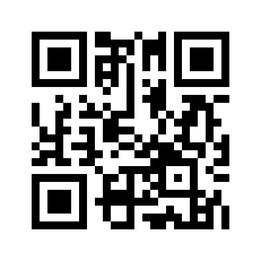

Распечатайте без обрезки белых полей либо откройте на другом экране. Каждый сканирует карточку своей роли из игры.
На одном телефоне без распечатки используйте режим «Без камеры». Карточки не содержат ответов.
План техэтажа · слой помещений

Сервисный журнал · слой подключений